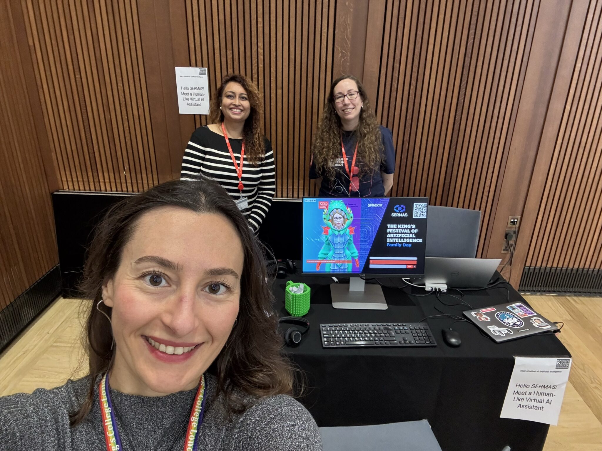

Public engagement and talks
Selected outreach activities, invited talks, workshops, and conference presentations.

Public engagement · May 2025
King’s Festival of Artificial Intelligence Family Day
Our team invited children and families to converse with a human-like virtual assistant. The demonstration ran for more than five hours and opened discussions about what artificial intelligence can do, how it responds to people, and why responsible design matters.
Selected presentations
Recent talks and presentations across social AI, gaze, interaction understanding, and human motion.
CONTEXTUS at ECCV 2026. Workshop and UDIVA HHOI challenge on understanding human interaction in context.
MultimodalAI 2026. UDIVA HHOI received the Best Talk Award at the 4th MultimodalAI workshop organized by UKOMAIN. Announcement ↗
IAISE at IJCNN 2025. Invited talk titled “Towards Robust Eye Tracking for Everyday Smart Eyewear Use.” Programme ↗
CVPR 2024. Discussed seamless motion composition along with Germán Barquero on CVPR Daily. Feature ↗